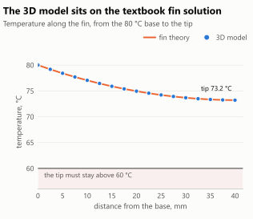
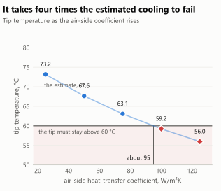

The Question
One fin of a heat sink is 6061 aluminium, 40 mm tall, 20 mm wide and 2 mm thick. The base is at 80 °C and the air is at 25 °C, with a heat-transfer coefficient of about 25 W/m²K. Does the tip stay above 60 °C, and how sure can I be?
The Answer
Yes, comfortably. The coldest point on the tip is 73.2 °C. Even with every input at its worst at the same time (double the air-side coefficient, the lowest likely conductivity for this alloy, and every dimension at the cold end of its tolerance) the tip still sits at 65.9 °C.
The air-side coefficient matters most. The tip only gets down to 60 °C if that coefficient climbs to about 95 W/m²K, almost four times the estimate. The other realistic way to fail is a poor joint between the fin and the base. If the fin root only reaches about 65 °C and not 80, the tip drops to 60 °C, so that's what I'd check on the real part.
The Model
- Part
- A straight rectangular fin, 40 mm long from base to tip, 20 mm wide and 2 mm thick, in full 3D.
- Material
- 6061 aluminium, conductivity 167 W/mK (the T6 temper). A range of 150 to 180 covers the other tempers.
- Heat in
- The base face is held at 80 °C.
- Heat out
- Every exposed face loses heat to air at 25 °C with a coefficient of 25 W/m²K. A range of 12.5 to 50 is tested.
- Mesh
- Hexahedral elements from 2 mm down to 0.25 mm, generated in code.
- Analysis
- Steady heat conduction in CalculiX 2.22.
- What's measured
- The lowest temperature on the tip face, which is checked to be the lowest in the whole fin.
The case file: recorded assumptions, limits and inputs
This is the study's own record, written before the run and saved with it, in the shorthand of the case file.
Straight rectangular 6061 aluminium fin (nominal 40 x 20 x 2 mm, base 80 C, air 25 C, h 25 W/m^2K) evaluated at the corners of the heat-transfer coefficient range (12.5-50 W/m^2K), conductivity range (150-180 W/mK) and dimensional tolerances, with 3D CalculiX conduction on 0.25 mm hex elements. Finds whether the minimum tip temperature stays at or above 60 C across the ranges.
Assumptions, and How Each Is Checked
- As fin_mesh, except the inputs varied below.
- h is an effective coefficient (convection plus linearised radiation), uniform over all exposed faces; range 12.5-50 W/m^2K is synthetic (factor 2 on the user's 'about 25').
- Conductivity range 150-180 W/mK covers the 6061 tempers (T6 167, T4 154, O 180); constant within each scenario.
- Dimensional tolerances t +- 0.1 mm, w +- 0.2 mm, L +- 0.2 mm are synthetic.
- Base 80 C and air 25 C are fixed user values.
- 1D fin theory is a valid independent reference; checked: Biot number below 0.1.
- Requirement metric is the minimum tip-face temperature; checked: it is the global minimum of the fin.
Limits
- Synthetic input ranges; not from a drawing, a material certificate, or a measured h.
- Corners only: no statistical (e.g. Monte Carlo) combination of the ranges.
- Numerical uncertainty is taken from fin_mesh (same element size).
- Single isolated fin with uniform h: neighbouring fins, air preheating, and the variation of h along the fin are not modelled.
- No physical test data.
Inputs
| Input | Value |
|---|---|
| thickness_mm | 2 |
| width_mm | 20 |
| length_mm | 40 |
| conductivity_W_per_mK | 167 |
| htc_W_per_m2K | 25 |
| base_temperature_C | 80 |
| air_temperature_C | 25 |
| element_size_mm | 0.25 |
Why It Matters
A fin only sheds heat where it's hotter than the air. If the tip cools almost to air temperature, the outer part of the fin is doing nothing and the metal is wasted. So a minimum tip temperature is a simple way to say the whole fin is working.
The more interesting part of this study is the second half of the question. The numerical answer is good to a thousandth of a degree, but the inputs aren't. The air-side coefficient is "about 25", which could easily be half or double that. A thermal answer is only useful if it says how far the inputs can move before the verdict changes.
How It Works
The model solves for the temperature everywhere in the fin, with heat entering at the base and leaving through all five exposed faces. After the nominal case, four more cases put the inputs at the corners of their ranges: the coldest combination, the warmest, and the two main effects on their own (a cold build, and a high air-side coefficient). A separate sweep raises the air-side coefficient until the tip reaches 60 °C, which is what gives the "about 95" figure.


How I Checked It
- Against fin theory. The textbook 1D fin solution agrees with the 3D result within half a thousandth of a degree along the whole fin. I wrote down the expected values before running, and every result came within a tenth of a degree of them.
- The comparison is fair. The temperature through the thickness is uniform to a few hundredths of a degree, which is the condition for the 1D solution to apply.
- Energy balance. The heat going in at the base matches the heat leaving through all the surfaces.
- Mesh refinement. Going from 2 mm to 0.25 mm elements converges at exactly the expected rate, leaving under a thousandth of a degree of numerical uncertainty.
What I Caught Along the Way
- The base heat flow CalculiX reported was 1.3 % short of the heat leaving the surfaces, because the solver leaves out the convection on the base nodes themselves. With that added back, the energy balance closes exactly.
- On the finest meshes, the change in tip temperature was about the same size as the rounding in the solver's standard output, which made convergence impossible to judge. I switched to a higher-precision output so rounding can't decide it.
Limits, and What I'd Do Next
- The fin root is taken at exactly 80 °C. A poor fin-to-base joint is the realistic way to fail, and it's what I'd measure first.
- The air-side coefficient is an input, the same on every face. It isn't computed from the airflow, and neighbouring fins and warming of the air along the fin aren't modelled.
- Steady state, with made-up tolerance ranges. Only the corners of the ranges are run.
- An AI agent built this study working only from my written procedures. I set it up as a test of whether those procedures produce verified work on a problem they hadn't seen before.
Evidence
Run reports, with every check and the saved inputs